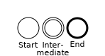
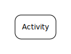
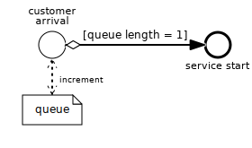

Discrete Event Process Modeling Notation (DPMN)
Warning: This document is outdated. A new version of the DPMN spec will be published soon.
 This document is licensed under a Creative Commons Attribution-NonCommercial 4.0 International License.
This document is licensed under a Creative Commons Attribution-NonCommercial 4.0 International License.Publication date: . Also available as PDF.
Summary
DPMN is a diagram language for making (computational) process design models for discrete event simulation based on Event Graphs and BPMN. It combines the intuitive flowchart modeling style of BPMN with the rigorous semantics provided by the event scheduling arrows of Event Graphs and the event rules of the Object Event Modeling and Simulation paradigm. While BPMN uses XML Schema as its default type definiton language, DPMN uses UML Class Diagrams as its default type definiton language for defining object, event and data types. As opposed to BPMN Data Objects, DPMN Data Objects instantiate an object type defined by an information model expressed in the form of a UML Class Diagram. A DPMN model has a formal semantics in terms of an Abstract State Machine whose state structure is defined by an object-oriented signature and whose transitions are defined by event rules capturing causal regularities.
Introduction
The Discrete Event Process Modeling Notation (DPMN) extends and modifies the language of BPMN Process Diagrams for the purpose of making event rule design models and process design models, which are computationally complete process specifications that can be used for Discrete Event Simulation (DES) modeling. DPMN preserves large parts of BPMN's vocabulary, visual syntax and informal semantics. It supports two types of diagrams: event rule design diagrams and process design diagrams, which consist of an integrated set of event rule design diagrams.
The development of DPMN is guided by the modeling and simulation concepts of the Object Event Modeling and Simulation (OEM&S) paradigm: object types, event types, event rules and activity types, see [1]. DPMN is the process design modeling language of choice in OEM&S. DPMN's formal semantics is obtained by considering a DPMN process design model as a composition of event rule design models specifying a set of event rules that act as transition functions such that the Abstract State Machine semantics proposed in [2] can be applied.
The main ideas underlying the development of DPMN can be summarized as follows:
- Flowchart-style diagrams provide an intuitive visual syntax for process modeling.
- A sufficiently expressive flowchart language must include events, activities and (conditional and parallel) branching.
- Process design models need to express computationaly complete process specifications.
- BPMN's Sequence Flows do not have a clear computational (control flow) semantics. The event scheduling semantics of Schruben's Event Graphs (see Section 1.4), provides a computational semantics for Sequence Flows leading to event circles.
- Since they define transition functions, the event rules of OEM&S, which allow capturing causal regularities for describing the dynamics of a system, provide an operational (transition system) semantics for generalized forms of Event Graphs.
- Constructing a process design model as a composition of event rule design models provides a formal semantics for DPMN process diagrams: the Abstract State Machine semantics proposed in [2].
Model-Driven Engineering
Model-Driven Engineering (MDE), also called model-driven development, is a well-established paradigm in Information Systems and Software Engineering. In MDE, there is a clear distinction between three kinds of models as engineering artifacts resulting from corresponding activities in the analysis, design and implementation phases of a development project:
-
solution-independent domain models (also called conceptual models),
-
platform-independent solution design models,
-
platform-specific implementation models.
A domain model may include both descriptions of the domain’s state structure (in conceptual information models) and descriptions of its processes (in conceptual process models). They are solution-independent, or ‘computation-independent’, in the sense that they are not concerned with making any system design choices or with other computational issues. Rather, they focus on the perspective and language of the subject matter experts for the domain under consideration.
In the design phase, a platform-independent solution design model is developed on the basis of the domain model, consisting of an information design model and a process design model. The same domain model can potentially be used to produce a number of (even radically) different design models. Then, one or more platform-specific implementation models can be derived from a design model. These one-to-many relationships between conceptual models, design models and implementation models are illustrated in Figure 1.1.
Information Modeling with UML Class Diagrams
Conceptual information modeling is mainly concerned with describing the relevant entity types of a domain and the relationships between them, while information design modeling is concerned with describing the logical (platform-independent) data structures, typically in the form of classes of an Object-Oriented (OO) modeling language like UML Class Diagrams, for designing and implementing a software or simulation system.
UML allows defining special categories (called ‘stereotypes’) of modeling elements. For instance, for distinguishing between object types and event types as two different categories of entity types we can define corresponding stereotypes of UML classes («object type» and «event type») and use them for categorizing classes in class models. This is shown in the model of Figure 1.2 below, which describes the event type Delivery and the object type Shop and a binary many-to-one association between them assigning to each delivery event the shop that receives the delivery (we can say that the shop participates in the delivery event).
Process Modeling with BPMN Process Diagrams
The Business Process Modeling Notation (BPMN) is an activity-based graphical modeling language for defining business processes following the flow-chart metaphor. In 2011, the Object Management Group has released version 2.0 of BPMN with an optional execution semantics based on Petri-net-style token flows.
The most important elements of a BPMN process model are listed in Table 1.1.
| Name of element | Meaning | Visual symbol(s) |
|---|---|---|
|
Event |
|
 |
|
Activity |
|
 |
|
Gateway |
A Gateway is a node for branching or merging control flows. A Gateway with an "X" symbol denotes an Exclusive OR-Split for conditional branching, if there are 2 or more output flows, or an Exclusive OR-Join, if there are 2 or more input flows. A Gateway with a plus symbol denotes an AND-Split for parallel branching, if there are 2 or more output flows, or an AND-Join, if there are 2 or more input flows. A Gateway can have both input and output flows. |

|
|
Sequence Flow |
An arrow expressing the temporal order of Events, Activities, and Gateways. A Conditional Sequence Flow arrow starts with a diamond and is annotated with a condition (in brackets). |

|
|
Data Object |
Data Objects may be associated with Events or Activities, providing a context for reading/writing data. A unidirectional dashed arrow denotes reading, while a bidirectional dashed arrow denotes reading/writing. |

|
BPMN process diagrams can be used for making
- conceptual process models (called
private non-executable
business process models), e.g., for documenting existing business processes and as a basis for designing new business processes; - process automation models (called
private executable
business process models) for specific business process automation platforms (that allow partially or fully automating a business process) by adding platform-specific technical details in the form of model annotations that are not visible in the diagram;
However, BPMN has several semantic issues and is not expressive enough for making platform-independent computationally complete process design models that can be used for designing DES models and as a basis for obtaining implementation models that allow generating code for specific process automation platforms.
Ontologically, BPMN activities (or, more precisely, activity types) are special event types. However, the subsumption of activities under events is not supported by the standard semantics of BPMN. This is one of the issues where BPMN needs to be improved for allowing a more general process modeling semantics.
BPMN supports the utilization of resources by an Activity. As in classical workflow modeling, a (possibly human) Performer is treated as a special case of a Resource Role. An Activity may have Data Inputs and Data Outputs, which can be visually expressed as Data Objects associated with the Activity.
A Pool represents a Collaboration Participant. A Pool can be partitioned into Lanes, which may be used for representing the different actors (activity performers) acting in the same domain of control. Other activity resources, such as a room, a desk or a vehicle, cannot be visually expressed in BPMN.
In DES, an activity type may be associated with resource roles, typically including an actor. A (discrete) processing activity type is, in addition, associated with one or more processing object types. Typically, processing objects arrive and queue up at a resource where they wait to be processed by the actor(s). We can say that arriving processing objects trigger the performance of a processing activity.
Since BPMN has no concept of processing objects, it cannot adequately model processing activities and processing processes. Processing objects are like BPMN tokens
: they flow through a sequence of nodes. But while a processing object is a first-class modeling element in DES, a token is [just] a theoretical concept that is used as an aid to define the behavior of a Process
, as stated on p. 238 of the BPMN 2.0 specification.
The official BPMN execution semantics is not mandated by the BPMN specification, which states that implementations claiming Process Modeling Conformance are not expected to support the BPMN execution semantics
(p.8). This implies that BPMN does not have a precise semantics, but rather two semantics: a widely adopted informal semantics defined by Process Modeling Conformance, and a rarely adopted formal one based on Petri-net-style token flows, which is limited to case handling processes where each start event represents a new case and starts a new process for handling this case in isolation from other cases. This semantics disallows, for instance, to model processes where several cases are handled in parallel and interact in some way, e.g., by competing for resources. Consequently, this semantics is inadequate for capturing the overall process of a business system with many actors performing tasks related to many cases with various interdependencies, in parallel.
While BPMN does not refer to the fundamental concept of object types and utilizes XML Schema for defining data types and XPath for defining expressions, DPMN utilizes UML Class Diagrams for defining data, object and event types and OCL for defining expressions.
DPMN and Event Graphs
DPMN diagrams can be viewed as a generalization of the Event Graph diagrams of (Schruben 1983), which allow defining computationally complete process models for DES. In these diagrams, circles represent event types, which may be annotated with (possibly conditional) variable assignments representing state changes, and may have (possibly conditional) event scheduling arrows going to another event type circle and possibly being annotated with a delay time expression. A simple Event Graph example is expressed with BPMN in Figure 1.3 below.

In the Event Graph shown in Figure 1.3, when an Arrival event occurs, the state variable Q (representing the queue length) is incremented by 1, as defined by the state change statement Q++. In addition, if the state condition Q=1 holds, an immediate follow-up event of type ServiceStart is scheduled. The unconditional event scheduling arrow between ServiceStart and ServiceEnd means that any ServiceStart event schedules a ServiceEnd event (with a delay corresponding to the service duration). Finally, a ServiceEnd event causes (a) the state change that Q is decremented by 1, and (b), if Q > 0, that an immediate follow-up event of type ServiceStart is scheduled.
Like Event Graphs, DPMN diagrams have a precise formal semantics, such that they are computationally complete platform-independent design models that can be used as a basis for coding a platform-specific DES model with a DES technology. DPMN generalizes Event Graphs by allowing more expressive (e.g., object-oriented) concepts of system state and state change, and by supporting activities in addition to events.
DPMN Elements
The main elements of DPMN are the following diagram node types:
- the three control flow node types:
- Event types (circles),
- Activity types (rounded-corner rectangles), and
- Gateway types (diamonds),
- Data Objects (rectangles),
- Text Annotations (left brackets that are attached, via dashed connection lines, to control flow node types, Data Objects or Sequence Flows),
and the following diagram arc types:
- Sequence Flows (solid arrows) between control flow node types,
- Data Object attachments (dashed arrows) between Event/Activity types and Data Objects.
DPMN adopts and adapts the syntax and semantics of BPMN in the following way:
- A DPMN diagram has an underlying UML class diagram defining its object, event and data types.
- DPMN Sequence Flow arrows pointing to an event circle denote event scheduling control flows (adopted from Event Graphs). They may be annotated by event attributes assignments and a delay time expression for scheduling (creating) a new event.
- DPMN has three special forms of Text Annotation:
- Text Annotations attached to Event circles for declaring event rule variables,
- Text Annotations attached to Sequence Flow arrows pointing to Event circles for specifying the delays of the events to be scheduled,
- Text Annotations attached to Sequence Flow arrows pointing to Event circles for specifying event attributes assignments.
- DPMN has an extended form of Data Object visually rendered as rectangles with two compartments:
- a first compartment showing an object variable name and an object type name separated by a colon, together with a binding of the object variable to a specfic object in the form of an equality condition enclosed in brackets;
- a second compartment containing a block of state change statements (such as attribute value assignments).
- BPMN's temporal semantics and visual syntax distinction between Start, Intermediate and End Events is dropped. A DPMN Event circle implicitly represents a start (or end) Event when it has no incoming (or outgoing) Sequence Flow arrows. It represents an intermediate Event if it has both incoming and outgoing Sequence Flow arrows.
- In a DPMN event rule design diagram, there is exactly one start Event circle followed by zero or more end Event circles, but there is no intermediate Event circle.
- A DPMN process design diagram consists of an integrated set of event rule design diagrams such that its intermediate Event circles are semantically overloaded: in the context of an incoming Sequence Flow arrow they denote a scheduled event to be added to the Future Events List (FEL), while in the context of an outgoing Sequence Flow arrow or an attached Data Object, they denote an event occurrence that causes state changes and follow-up events. The scheduled event and the resulting event occurrence could be separated by drawing two event circles that are connected by a Sequence Flow arrow denoting a wait-for control flow. Such a pair of event circles corresponds to a pair of sequential BPMN Events where the first one is a throwing and the second one is a catching intermediate event.
- The token flow semantics of BPMN is replaced by the operational semantics of event rules defined in [2].
An Event circle corresponds to an event type of the underlying information design model and may trigger both state changes, as specified in Data Object rectangles attached to the Event circle, and follow-up events, as specified by (possibly conditional) event scheduling Sequence Flow arrows.
Examples
Example 1: An Event-Based Inventory Management Model
We consider a simple case of inventory management: a shop selling one product type (e.g., one model of TVs), only, such that its in-house inventory only consists of items of that type. On each business day, customers come to the shop and place their orders. If the ordered product quantity is in stock, the customer pays her order and the ordered products are handed out to her. Otherwise, the order may still be partially fulfilled, if there are still some items in stock, else the customer has to leave the shop without any item.
When the stock quantity falls below the reorder point, a replenishment order is sent to the vendor for restocking the inventory, and the ordered quantity is delivered 1-3 days later.
Information Model
We can extract the following candidates for object types from the problem description by identifying and analyzing the domain-specific noun phrases: shops (for being more precise, we also say single product shops), products (or items), inventories, customers, customer orders, replenishment orders, and vendors. Since noun phrases may also denote events (or event types), we need to take another look at our list and drop those noun phrases. We recognize that customer orders and replenishment orders denote messages or communication events, and not ordinary objects. This leaves us with the five object types described in the diagram shown in Figure 2.1.
Notice that the model also includes associations between object types. The association shops–have–products is one-to-one because we assume that shops only sell a single product, while the association shops–have–inventories is one-to-one because we assume that shops only have one inventory for their single product.
In the next step, event types are added, together with their participation associations with involved object types. They can be identified, e.g., by considering the verb phrases in the problem description, such as pay order
, hand out product
, and deliver
. In the model shown in Figure 2.2, for forming names for event types, these verb phrases are nominalized.
Notice that a participation association between an object type and an event type is typically one-to-many, since an event of that type has typically exactly one participating object of that type, and, vice versa, an object of that type typically participates in many events of that type.
We now derive an information design model from the solution-independent conceptual information model shown in Figure 2.2. A design model is solution-specific because it is a computational design for a specific research question. In the example under consideration, we deal with the following specific research question: compute the average percentage of lost sales (if an order quantity is greater than the current stock level, the difference counts as a lost sale). A design model is platform-independent in the sense that it does not use any modeling element that is specific for a particular platform, such as a Java datatype.
In the solution design model, the goal is to keep only those entity types in the model, which are needed for being able to answer the research question(s).In the design model, we follow a widely used naming convention: the name of a class is a capitalized singular noun phrase in mixed case.
For simplicity, we add a lostSales attribute to the SingleProductShop class for storing the lost-sales statistics for each shop. Alternatively, we could add a special class for defining statistics variables.
Since for computing the percentage of lost sales, we don’t need the order quantities of individual orders, but only the total number of ordered items, it’s sufficient to model an aggregate of customer orders like, for instance, the daily demand. Consequently, we don’t need to consider individual customers and their orders. We can also drop all object types except SingleProductShop and all event types except DailyDemand and Delivery.
Thus, the simplifications of design modeling lead to a model as shown in Figure 2.3.
Notice that we distinguish between two kinds of event types: exogenous event types and caused event types, and that the two associations model the participation of the shop both in DailyDemand events and in Delivery events, and the association end names shop and receiver represent the reference properties DailyDemand::shop and Delivery::receiver (as implied by the corresponding association end ownership dots). These reference properties allow to access the properties and invoke the methods of a shop from an event, which is essential for the event routine of each event type. Thus, the ontological pattern of objects participating in events and the implied software pattern of object reference properties in event types are the basis for defining event routines (and rules) in event types.
While exogenous events of a certain type occur again and again with some (typically random) recurrence, caused events occur at times that result from the internal causation dynamics of the simulation model. So, for any event type adopted from the conceptual model, we choose one of these two categories. For any exogenous event type, we add a recurrence operation, which is responsible for computing the time until the next event occurs, and a createNextEvent operation, which is invoked for creating a new instance of the event type as its next occurrence.
Process Model
We make a conceptual process model and a process design model for the inventory management system. These models can be expressed visually in the form of BPMN and DPMN process diagrams and textually in the form of event rule tables.
A conceptual process model should include the event types identified in the conceptual information model, and describe in which temporal sequences events may occur, based on conditional and parallel branching. We can do this by describing, for each of the event types from the conceptual information model, the causal regularity associated with it in the form of an event rule that defines the state changes and follow-up events caused by events of that type.
The purpose of a conceptual process model for simulation is to identify causal regularities and express them in the form of event rules, one for each relevant type of events, at a conceptual level. We can describe event rules textually and visually in an event rule table like Table 2.1.
| ON (event type) | DO (event routine) | Conceptual Event Rule Diagram |
|---|---|---|
|
customer order |
check inventory; |

|
|
product handover |
decrement (get product from) inventory; |

|
|
customer payment |
customer departure [Notice that we do not describe the increase of the shop's cash balance due to the payment, because we focus on inventory.] |

|
|
replenishment order |
delivery |

|
|
delivery |
increment inventory; |

|
We can integrate these conceptual event rule models in a conceptual process model, as shown in Figure 2.4.

Notice that the BPMN End Event circles used in the event rule models may have to be converted to BPMN Intermediate Event circles in the integrated model.
A process design model needs to provide a computationally complete specification of event rules, one for each event type defined in the information design model. An event rule for a given event type essentially defines a set of (possibly conditional) state changes and a set of (possibly conditional) follow-up events triggered by an event of that type. We show below how a computational form of event rules can be visually expressed in DPMN diagrams.
Since our information design model (tailored to the given research question of computing the lost sales statistics) only includes two event types, DailyDemand and Delivery, we need to model the two corresponding event rules, only, as in the event rule design Table 2.2, where these rules are modeled textually using pseudo-code.
| ON (event expr.) | DO (event routine) |
|---|---|
|
DailyDemand( sh, demQ) @ t
|
|
|
Delivery( rec, delQ) @ t
|
|
Notice the general structure of an event expression like DailyDemand( sh, demQ) @ t: it starts with the name of an event type (here: DailyDemand) followed by a comma-separated list of event parameter names (here, sh and demQ), corresponding to event attributes, and an occurrence time annotation @ t. The event expression is complemented with a parameter legend (here, sh: SingleProductShop) defining the type of each event parameter.
We can also express these two rules in DPMN event rule design diagrams, as shown in Figure 2.5 and Figure 2.6.
In general, a DPMN event rule design diagram contains event circles with two-part names (like dd: DailyDemand) specifying an event variable (like dd) and an event type (like DailyDemand). Event circles may be associated with one or more data object rectangles (like sh: SingleProductShop). There is exactly one start event circle without incoming arrows, which may contain rule variable declarations in an attached text annotation. The data object rectangles contain state change statements using the event variable and possibly the rule variable(s).
An event circle may have one or more outgoing arrows leading to gateways or to event circles. The incoming arrows to an event circle represent event scheduling control flows. They must be annotated with event attribute assignments (like quantity and receiver in Figure 2.5) and an assignment of the scheduled event's occurrence time, which is provided in the form of a delay expression prefixed with "+". E.g, the annotation +Delivery.leadTime() in Figure 2.5 means that the scheduled Delivery event will occur with a delay provided by invoking the Delivery.leadTime() function.
Notice that Delivery events trigger a state change, but no follow-up events.
These two event rule design models can be merged into a process design model shown in Figure 2.7.
Example 2: An Event-Based Service Desk Model
In a basic service system example, customers arrive at random times at a service desk where they have to wait in a queue when the service desk is busy. Otherwise, when the queue is empty and the service desk is not busy, they are immediately served by the service clerk. Whenever a service is completed, the next customer from the queue, if there is any, is invited for the service and moves forward to the desk.
Information Model
It is straight-forward to extract four object types and six event types from the problem description above, resulting in the conceptual information model shown in Figure 2.8.
The associations between event types and object types represent participation relationships. For instance, in the model of Figure 2.8, we express that a customer arrival event has exactly one customer and one service desk as its participants. For completing the conceptual information model, we may add attributes for describing objects and events of these types.
The model of Figure 2.8 implicitly contains an activity type composed of the two event types service start
and service end
. It is well-known that, conceptually, an activity is a composite event that is temporally framed by a pair of start and end events. When making an information model for a form of DES with activities, we can replace such pairs of start and end event types with corresponding activity types. For instance, in Figure 2.8, we could replace the two event types service start
and service end
with the activity type service performances
.
We now derive a solution-specific, but platform-independent information design model from the solution-independent conceptual information model shown in Figure 2.8. A design model is solution-specific because it is a computational solution design for answering one or more research questions, allowing to abstract away from those object and event types that are not relevant for the solution design.
We consider the following specific research question: compute the Mean Response Time, which is the average length of time a customer spends in the system from arrival to departure. This research question allows abstracting away from all object types of the conceptual model except service desks
and customers
, and from all event types except customer arrivals
and customer departures
. However, for getting a uniform series of models, we also include service start
and service end
events.
In an information design model we distinguish between two kinds of event types: exogenous event types and caused event types. While exogenous events of a certain type occur again and again, typically with some random recurrence that can be modeled with a probability distribution, caused events occur at times that result from the internal causation dynamics of the simulation model.
In our example model, shown in Figure 2.9, we define CustomerArrival as an exogenous event type with a recurrence function that implements a random variable based on the exponential distribution with event rate 0.5, symbolically expressed as Exp(0.5). Notice that all event types have a functional association with the object type ServiceDesk, which will be implemented in the form of a serviceDesk reference property.
Notice that we have modeled the random duration of a service with the help of the random variable operation serviceDuration() shown in the third compartment of the ServiceDesk class. It must be implemented by a method that samples the exponential distribution function Exp(0.5).
The information design model shown in Figure 2.9 supports simulation scenarios with one or more service desks, each having its own waitingCustomers queue and its own events, operating in parallel. For chained service desks scenarios, an optional successor property would have to be added to the ServiceDesk object type. Chained service desks will be discussed in Example 4.
Process Model
The most basic form of a process model consists of a set of event rule models, expressed textually in the form of event rule statements, or visually in the form of event rule diagrams, preferably collected in an event rule table. Alternatively, a process model may be obtained by integrating all event rule diagrams within a consolidated process diagram.
Conceptual process models can be expressed visually in the form of BPMN process diagrams or textually in the form of English event rule statements.
For simplicity, we consider the customer that is currently being served to be part of the queue. In this way, in the simulation program, we can check if the service desk is busy by testing if the length of the queue is greater than 0.
| ON (event type) | DO (event routine) | Conceptual Event Rule Diagram |
|---|---|---|
|
customer arrival |
the queue (length) is incremented; |
 |
|
service start |
service end |
|
|
service end |
customer departure |

|
|
customer departure |
the queue (length) is decremented; if there is still someone in the queue (queue length > 0), the next service starts |

|
The individual event rule diagrams shown in Table 2.1 can be integrated with each other as shown in Figure 22 where we have to express the event types service start
, service end
and customer departure
in the form of BPMN’s intermediate events for complying with the BPMN syntax.

If we would make a process model for a form of basic DES extended with activities, as in the next example, we would replace the two event types service start
and service end
with the activity type service performance
resulting in the model depicted below in Figure 2.11.

Process design models can be visually expressed in the form of DPMN process diagrams and textually in the form of event rule pseudo code.
In the process design model, we include one event rule for each of the event types of the information design model in Figure 2.9. Notice that the event scheduling time expression @t', e.g., in the CustomerArrival and ServiceEnd rules, denotes scheduling at the next moment in time, which is either t+1, if time is discrete, or, otherwise, t+ε where ε is the smallest time point distance depending on the time granularity of the model.
| ON (event expr.) | DO (event routine) |
|---|---|
|
CustomerArrival( sd) @ t |
|
|
ServiceStart( sd) @ t |
|
|
ServiceEnd( sd) @ t |
|
|
CustomerDeparture( sd) @ t |
|
These event rule design models can be merged into a process design model:

The operators PUSH and POP in the sd.ServiceDesk data object rectangles refer to the standard queue operations push and pop. Generally, in DPMN, state change statements are expressed in a language that depends on the state structure of the modeled system. Typically, this will be an object-oriented system state structure where basic state changes consist of attribute value changes as well as link creations and destructions. If an attribute has a complex data value, such as a set or an array list, a state change statement can be expressed in terms of the operations provided by the complex (collection) datatype.
Example 3: An Activity-Based Service Desk Model
Information Model
We again consider the service desk system, as described in the section about Example 2. But now we model the service performed at the service desk as an activity.
Conceptually, an activity is a composite event that is temporally framed by a pair of start and end events. Consequently, whenever a model contains a pair of related start and end event types, like service start and service end in the model of Figure 2.8, they can be replaced with a corresponding activity type, like service performances, as shown in Figure 2.13.
As in Example 2, in the design model we only need the object types ServiceDesk and Customer. But instead of the pair of related start/end event types ServiceStart and ServiceEnd, we now have the activity type ServicePerformance.
Notice that we have moved the random variate sampling method serviceDuration() from ServiceDesk to ServicePerformance, as shown in Figure 2.14, since this is the most natural context class for it.
This model only supports scenarios with either just one service desk or multiple service desks operating in parallel. For chained service desks scenarios, an optional next property, defining a successor association, can be added to the ServiceDesk object type, as shown in the following diagram.
The successor association defines a network of service desks. The resulting service network model is discussed in the section on Example 4.
Process Model
| ON (event type) | DO (event routine) | Conceptual Event Rule Diagram |
|---|---|---|
|
customer arrival |
the queue (length) is incremented; |
|
|
service performance |
customer departure |

|
|
customer departure |
the queue (length) is decremented; if there is still someone in the queue (queue length > 0), the next service starts |
The conceptual event rule models shown in Table 2.5 are integrated with each other in the diagram shown in Figure 2.11.
An activity is scheduled by providing both its start time t and its duration Δ in the form of an ordered pair [t, Δ]. In the following table, when the start time is specified with the expression t' refering to a given time instant t, this represents the next moment in time, which means the activity starts immediately.
| ON (event expr.) | DO (event routine) |
|---|---|
|
CustomerArrival( sd) @ t |
|
|
ServicePerformance( sd) @ t |
|
|
CustomerDeparture( sd) @ t |
|
Notice that activities are composite events with duration. Scheduling an activity means scheduling its start event. An activity completes with the occurence of its end event. Conseqeuntly, an activity occurs at the same time as its end event.
The three event rule design models described in the above table can be merged into a process design model:

In a DPMN diagram, an activity scheduling time expression of the form [t', Δ], where t' means starting the activity without delay, is simplified to the expression +Δ.
Example 4: An Activity-Based Service Network Model
When chaining service desks, we have to distinguish between start/end nodes and intermediate nodes. For simplicity, we do not model the arrivals and departures at, resp. from, intermediate nodes as explicit events. Rather we leave these events implicit by merging them with the corresponding service start/end events. Thus, in a service network model, a customer arrival event represents an arrival at a start node of the network, and a customer departure event represents a departure at an end node of the network.
A simple example of a service network is a chain of two service desks as in a Department of Motor Vehicles (DMV) where clients first have to queue up at the reception desk for their request being recorded and then have to wait for a clerk who will handle their case. This scenario consists of two parallel chains:
- a sequence of two spatial objects: a reception desk followed by a case handling desk;
- a sequence of two activity types: a reception activity type associated with the reception desk and a case handling activity type associated with the case handling desk such that the end of a reception activity may schedule the start of a follow-up case handling activity.
The service desk objects are involved in the flow
of customers through the network, which is accompanied by a parallel activity control flow. The combination of these two parallel flows is characteristic for the general concept of processing networks: (1) a flow of work objects (like customers, documents or manufacturing materials) from one node object (like a service desk, office desk or machine) to the next one and a parallel activity control flow. Such a network can be modeled either with specific (object and activity) types like ReceptionDesk, CaseHandlingDesk, Reception and CaseHandling, as shown in Section 2.4.1, or with generic types like ServiceDesk and ServicePerformance, as shown in Section 2.4.2.
A specific model for a service network is more complex than the generic model, simply because it defines more object types and activity types. This complexity is only justified if the model needs to describe different service desk types and related activity types, each with different features (properties, operations and constraints).
A Specific Model
A specific information design model for a service desk chain consisting of a reception desk and a case handling desk is shown in the following diagram:
The next property of ReceptionDesk defines a successor relationship that allows ReceptionDesk objects to access the waitingCustomers queue of their successor service desks.
Using this model, the initial state of a simulation scenario can be coded by creating a CaseHandlingDesk instance and a ReceptionDesk instance that references the CaseHandlingDesk instance in its next property:
CaseHandlingDesk{ id: 2};
ReceptionDesk{ id: 1, next: 2};

A Generic Model
A generic information design model for a service network is shown in the following diagram:
The optional next property of service desks defines a successor relationship. Whenever the next property of a service desk has no value, this means that the service desk has no successor, so the customer must depart.
Using this generic model, the initial state of a simulation scenario can be coded by creating two ServiceDesk instances with names receptionDesk and caseHandlingDesk, such that the receptionDesk object references the caseHandlingDesk object in its next property:
ServiceDesk{ id: 2, name:"caseHandlingDesk"};
ServiceDesk{ id: 1, name:"receptionDesk", next: 2}
| ON (event type) | DO (event routine) | Conceptual Event Rule Diagram |
|---|---|---|
|
customer arrival |
the queue (length) is incremented; |
|
|
service performance |
the queue (length) is decremented; check simultaneously if the service desk has a successor and if there is still someone in the queue; if the service desk has a successor, then the next service performance at the successor desk starts, if its queue is empty; otherwise, if the service desk does not have a successor, the customer departs; if there is still any customer in the queue, then start the service for the next customer |

|
Based on these conceptual event rule models, we can make a process design model:

Notice that the condition (sd.next), using the syntax of JavaScript, tests if the object referenced by the variable sd has a value for the next property.
Example 5: Modeling a Network of Processing Nodes
In addition to the fundamental DES modeling concepts of objects, events and activities, the OEM&S paradigm also supports the concept of Processing Network (PN) models, which generalize the operations research concept of queueing networks
.
In a PN model, describing a network of entry nodes, processing nodes and exit nodes, work objects (representing, e.g., customers or raw materials) enter a system via arrival events at an entrance object and then flow through one or more processor objects (representing, e.g., sevice desks or manufacturing machines) where they are subject to processing activities before they leave the system at an exit object via a departure event.
DPMN adopts the OEM concepts for PN modeling, which are based on the fundamental DES modeling concepts of objects, events and activities. In OEM, a PN model can be converted into a semantically equivalent DES model consisting of object types, event types and activity types, which in turn can be converted to a basic DES model consisting of object and event types, only. The nodes of a PN model represent modeling elements that are overloaded with two meanings. Entry, resp. exit, nodes combine a (possibly spatial) node object, representing entrances resp. exits, and an associated implicit (arrival, resp. departure) event type. Processing nodes combine a (possibly spatial) processor object, representing, e.g., a service desk or a machine, and an associated implicit processing activity type. This semantic overloading makes PN models more concise and easier to read and understand.
Due to its intuitive building blocks and its applicability to problems in the manufacturing and service industries, PN modeling is the most widely used DES modeling paradigm. It is supported by many simulation tools, such as Arena, ExtendSim, Simul8, Simio and AnyLogic, each of them using their own proprietary terminology and diagram language for the same concepts.

The OEM concepts for PN modeling adopted by DPMN provide a vendor-neutral conceptual framework for analyzing and comparing the proprietary PN modeling languages of these commercial tools. The following table allows comparing the different terms used for core concepts:
| OEM | Arena | Simul8 | Simio | AnyLogic |
|---|---|---|---|---|
| Work Object | Entity | Work Item | Token | Agent |
| Entry Node | Create | Start Point | Source | Source |
| Processing Node | Process | Queue + Activity | Server | Service |
| Exit Node | Dispose | End Point | Sink | Sink |
Information Model
As shown in the information design model shown in Figure 2.16, the three kinds of PN nodes are modeled as follows:
- An entry node consists of a CustomerEntrance object and an associated CustomerArrival event type, which is also associated with a Customer object type, stating that a customer arrival event has two participants: a customer and a customer entrance. A CustomerEntrance object has an attribute for the statistics number of arrived customers.
- A processing node consists of a ServiceDesk object with a waitingCustomers queue, and an associated ServicePerformance activity type. Every ServiceDesk object is either connected to a next service desk or to an exit node.
- An exit node consists of a CustomerExit object and an associated CustomerDeparture event type. A CustomerExit object has two attributes for the statistics number of departed customers and cumulative time in system.
Process Model
The process model for a service network based on PN modeling concepts looks very much like the model shown in Figure 2.19, extended by attaching a CustomerEntrance Data Object to the CustomerArrival Event circle and a CustomerExit Data Object to the CustomerDeparture Event circle.
DPMN Language Models
Control Flow Nodes and Sequence Flows
Data Objects
T.B.D.
DPMN Execution Semantics
A DPMN model has a formal semantics in terms of an Abstract State Machine whose state structure is defined by an object-oriented signature and whose transitions are defined by event rules capturing causal regularities. A DPMN process design model is composed of event rule design models specifying a set of event rules, such that the Abstract State Machine semantics proposed in [2] can be applied to a DPMN model.